lc12 整数转罗马数字
罗马数字有7个单字符号 又六个减法规则带料的符合符号，总共十三个，给出一个int转成罗马数字表示。

官方题解给出了关于数字140的例子：

确定罗马数字的规则是：对于罗马数字从左到右的每一位，选择尽可能大的符号值。对于 140，最大可以选择的符号值为 C=100。接下来，对于剩余的数字 40，最大可以选择的符号值为 XL=40。因此，140140 的对应的罗马数字为 CXL。
方法列表
模拟
表示一个给定的整数 num，我们寻找不超过 num 的最大符号值，将num 减去该符号值，然后继续寻找不超过num 的最大符号值，将该符号拼接在上一个找到的符号之后，循环直至 num 为 0。最后得到的字符串即为罗马数字表示。
硬编码数字
mycode：
1 | class Solution { |
lc1035 不相交的线
两条独立的水平线上按给定的顺序写nums1 nums2
绘制链接这两组数字中某两个的而直线，这些直线同时满足:
nums1[i] == nums2[j]
绘制的直线不予其他线相交
请注意 连线及时在端点也不能相交 每个数字只能属于一条直线
返回可以绘制的最大连线数目
2 5 1 2 5
10 5 2 1 5 2
1 3 7 1 7 5
19 2 5 1
先思考：两条连线如果相交那么表示的是？ i1<i2和j1<j2不能同时满足，这种情况下可能会导致两条连线相交.
这题的思路可以用动态规划，首先，所有的线不相交的条件：假设一共绘制了k条直线，其中第x条直线链接nums1[\(i_x\)]和nums2[\(j_x\)]，有这两个数字相等 且这k对元素在两个数组中的相对顺序是一致的，因此这k对相等元素组成的序列是数组nums1和nums2的公共子序列，最长公共子序列——典型的二维动态规划问题。
nums1 长度 m
nums2 长度 n
创建m+1行n+1列的二维数组dp，其中dp[i][j]表示表示nums1[0:i] nums2[0:j]的最长公共子序列的长度。
考虑边界： i =0 时 nums1[0:i]空数组和任何数组的最长公共子序列的长度是0 dp [ 0 ][ j ] = 0;
当j = 0 时，nums2[0:j]为空 同理 dp[i][0] = 0
当 i > 0 且 j > 0时，考虑dp[ i ][ j ] 的计算：
当nums1[i-1] = nums2[j-1]时，将这两个相同的元素称为公共元素，考虑nums1[0:i-1] nums2[0:j-1]的最长公共子序列，再增加一个元素，即可得到nums1[0:i]和nums2[0:j]的最长公共子序列，因此dp[i][j] = dp[i-1][j-1] +1
当nums1[i-1]与nums2[j-1] 不相等，考虑0:i-1 0:j 的最长公共子序列和0：i 0：j-1的最长公共子序列 两者较大项即可

lc810 黑板异或游戏
黑板上写着一个非负整数数组 nums[i] 。Alice 和 Bob 轮流从黑板上擦掉一个数字，Alice 先手。如果擦除一个数字后，剩余的所有数字按位异或运算得出的结果等于 0 的话，当前玩家游戏失败。 (另外，如果只剩一个数字，按位异或运算得到它本身；如果无数字剩余，按位异或运算结果为 0。）
并且，轮到某个玩家时，如果当前黑板上所有数字按位异或运算结果等于 0，这个玩家获胜。
假设两个玩家每步都使用最优解，当且仅当 Alice 获胜时返回 true。
解析：
思考什么情况下Alice会获胜，当轮到某个玩家时，当前黑板上所有数字异或结果为0，此时该玩家获胜（因为上一个玩家失败），这个情况下Alice先手，也就是初始时抑或结果为0 A获胜
下面讨论初始时黑白上所有数字异或结果不为0的情况
由于两个人交替擦除数字，且每次都恰好擦除一个数字，因此对于这两人中的任意一人，其每次在擦除数字前，黑板上数字个数的奇偶性是相同的。
从数组的奇偶性来讨论。如果nums的长度是偶数，先手Alice是否可能失败呢？
假设Alice要失败的话，只有一种情况，无论擦除哪一个数字，剩余所有的数字的异或结果都等于0 而这是不可能的 给出证明：
设数组nums长度n n为偶数

擦除nums[i]之后：

等式两边同时异或nums[i] （*）

若无论擦掉哪个数字，剩余的所有数字异或结果都等于0，即对于属于0，n的i 都有Si = 0
因此对所有的Si异或结果也为0

将 *带入 并且根据异或运算的交换律和结合律化简

此公式第三行左边括号为n个S异或，由于n是偶数，因此n个S异或的结果为0
S=0与实际情况S$$0矛盾
因此当数组的长度为偶数时，先手Alice总能找到一个数字，擦除这个数字之后剩余的所有数字异或结果不等于零。
在Alice擦掉之后，BOb是奇数，擦一个，给A的一定还是偶数个，此时要么A获胜，要不A擦完后结果不为0，此时Alice一直不败。
同理，如果数组长度为奇数时候，Alice擦除掉一个数字之后，留给Bob的是偶数，因此Bob必胜。
因此Alice必胜的条件是以下两个条件中的至少一个得到满足：
数组nums的全部元素的异或结果等于0；
数组nums的长度是偶数。
lc1707 与数组中元素的最大异或值
给我一个由非负整数组成的数组nums，另外有一个查询数组queries，其中q[i]=[xi,mi]
第i个查询的答案是Xi和任何nums数组中不超过mi的元素按位异或得到的最大值，换句话说，答案是max(nums[j] XOR xi)其中所有j均满足nums[j] <= mi.如果nums中所有元素都大于mi，那么最终答案为-1
返回一个整数数组answer作为查询的答案，其中answer长度为queries的长度且元素一一对应
这题思路在理解了字典树还是比较清晰的，但是具体的位运算实现细节就很魔鬼了。
1 | class Solution { |
此题的铺垫——前缀树
lc208 实现Trie
前缀树 一种树形的数据结构，用于高校的存储检索字符串数据集中的键，这一数据结构应用场景很多例如自动补完和拼写检查。
请你实现 Trie 类：
Trie() 初始化前缀树对象。 void insert(String word) 向前缀树中插入字符串 word 。 boolean search(String word) 如果字符串 word 在前缀树中，返回 true（即，在检索之前已经插入）；否则，返回 false 。 boolean startsWith(String prefix) 如果之前已经插入的字符串 word 的前缀之一为 prefix ，返回 true ；否则，返回 false 。
Trie，又称前缀树或字典树，是一棵有根树，其每个节点包含以下字段：
- 指向子节点的指针数组 children。对于本题而言，数组长度为 26，即小写英文字母的数量。此时 children[0] 对应小写字母 aa，children[1] 对应小写字母 b，…，children[25] 对应小写字母 z。
- 布尔字段isEnd，表示该节点是否为字符串的结尾。
lc664 奇怪的打印机
题目描述：一个打印机每次纸打印相同字符的序列，每次可以在任意位置开始和结束打印一串序列并且覆盖之前的符号。给我一个字符串s，求该打印机能够打印出该符号串所需的最小打印次数。
定义 f[l][r] 为将 [l, r][l,r] 这一段打印成目标结果所消耗的最小打印次数。
不失一般性考虑 f[l][r] 该如何转移：
只打印 l 这个位置，此时 f[l][r] = f[l + 1][r] + 1 不只打印 l 这个位置，而是从 l 打印到 k（需要确保首位相同 s[l] = s[k]）：f[l][r] = f[l][k - 1] + f[k + 1][r], l < k <= r 其中状态转移方程中的情况 22 需要说明一下：由于我们只确保 s[l] = s[k]，并不确保 [l, k][l,k] 之间的字符相同，根据我们基本分析可知，s[k] 这个点可由打印 s[l]s[l] 的时候一同打印，因此本身 s[k] 并不独立消耗打印次数，所以这时候 [l, k][l,k] 这一段的最小打印次数应该取f[l][k−1]，而不是 f[l][k]。
最终的 f[l][r] 为上述所有方案中取min。
1 | class Solution { |
lc1787 使所有区间的异或结果为零
题目描述：
给你一个整数数组 nums 和一个整数 k 。区间 [left, right]（left <= right）的异或结果是对下标位于 left 和 right（包括 left 和 right ）之间所有元素进行 XOR 运算的结果：nums[left] XOR nums[left+1] XOR ... XOR nums[right] 。
返回数组中 要更改的最小元素数 ，以使所有长度为 k 的区间异或结果等于零。
示例 1：
1 | 输入：nums = [1,2,0,3,0], k = 1 |
示例 2：
1 | 输入：nums = [3,4,5,2,1,7,3,4,7], k = 3 |
示例 3：
1 | 输入：nums = [1,2,4,1,2,5,1,2,6], k = 3 |
官方解题思路：
有空可以考虑看看三叶姐姐的题解。
涉及到**最大，最小之类的问题，我现在已经能够敏锐地察觉到动规解法。官方题解就是动规，设nums长度为n。
为了动规能够找到状态的转移条件，需要分析这个数组被修改之后应该具有的性质。
由于任意长度为 k 的区间异或结果等于 0，那么对于任意的 i，有：
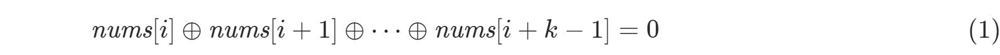
和
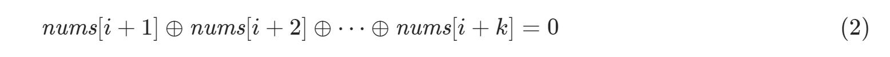
根据a^b ^ b = a的异或运算性质，联立上述两式，可得
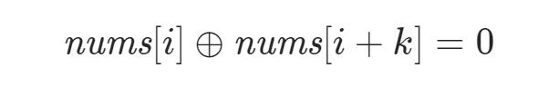
等价于nums[i] = nums[i+k]:重要结论——nums修改之后是一个以k为周期的数组，对任意[0,n-k)的i，有上式成立。
将数组下标对k取模分成k个组，每个组内元素必须要相等。并且这k个组对应的元素的异或和为0，即：
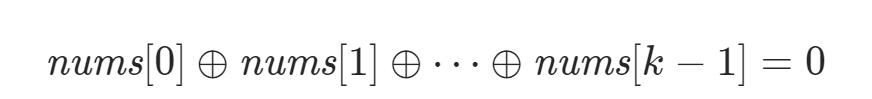
对于第 i个组，我们可以使用哈希映射来存储该组内的元素以及每个元素出现的次数，这样一来，我们就可以尝试使用动态规划来解决本题了。设 f(i,mask) 表示我们已经处理了第 0, 1, ...,i 个组，并且这些组对应元素的异或和：
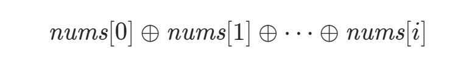
作为mask的前提下，这些组总计最少需要修改的元素个数。进行状态转移时，我们可以枚举第i组被修改成为哪个数，假设修改成了x，那么0,1,...,i-1组对应的元素异或和即为mask^x,可得状态转移方程：
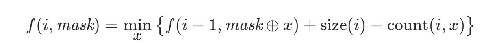
其中size(i)表示第i组里元素个数，count(i,x)表示第i组里元素x的次数，他们的值都可以通过hash映射得到，该转移方程的意义为：如果我们选择将第 i 组全部修改为 x，那么有 count(i,x) 个数是无需修改的，这样就需要修改 size(i)−count(i,x) 次。（还是能理解的过来的）
由于x的上限导致该方程的时间复杂度数量级很高，因此需要优化。
首先 size(i) 是与 x 无关的常量，我们可以将其移出最小值的限制，即：
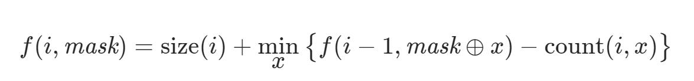
由于我们需要求的是「最小值」，因此在状态转移方程中添加若干大于等于「最小值」的项，对最终的答案不会产生影响。
考虑 count(i,x) 这一项，如果 x 没有在哈希表中出现，那么这一项的值为 0方程：
否则这一项的值大于 0。即：
(2)项严格小于(1),如果在方程中加(1)不会对结果产生影响。因此我们可以将状态转移方程变化为：
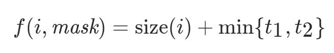
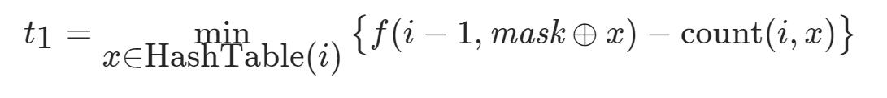
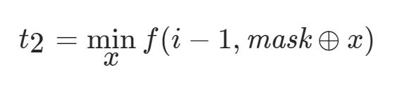
t2 就是所有状态 f(i−1,..) 中的最小值。
最终的答案取f(k-1,0)。
设计细节：
由于 f(i, ..) 只会从 f(i-1, ..) 转移而来，因此我们可以使用两个长度为 2^{10}的一维数组代替二维数组，交替地进行状态转移，减少空间复杂度。此外，当i=0 时，f(−1,..) 都是需要特殊考虑的边界条件。由于 f(−1,..) 表示没有考虑任何组时的异或和，因此该异或和一定为 0，即 f(-1, 0) = 0。其它的状态都是不合法的状态，我们可以将它们赋予一个极大值 ∞。
1 | class Solution { |
1c1190 反转每对括号间的子串
题目描述：
给出一个字符串 s（仅含有小写英文字母和括号）。
请你按照从括号内到外的顺序，逐层反转每对匹配括号中的字符串，并返回最终的结果。
注意，您的结果中不应包含任何括号。
示例 1：
1 | 输入：s = "(abcd)" |
示例 2：
1 | 输入：s = "(u(love)i)" |
示例 3：
1 | 输入：s = "(ed(et(oc))el)" |
题解：
官方题解方法一用栈结构，通过辅助变量str来保存小写英文字母，判断遍历时是左括号还是右括号来确定如何对字符串进行操作。
是基础思路，建议有空闲去读一读三叶的双端队列做法，数组模拟那个，空间复杂度更小。
1 | public static String myreverse(String s){ |
1c461 汉明距离
题目描述：
两个整数之间的汉明距离指的是这两个数字对应二进制位不同的位置的数目。
给出两个整数 x 和 y，计算它们之间的汉明距离。
示例:
1 | 输入: x = 1, y = 4 |
题解：
今天是简单题，但是不容小觑。“不同为1，相同为0”的异或运算，感觉很适合求解这道题。
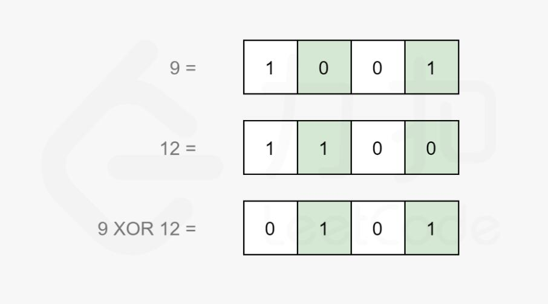
计算 xx 和 yy 之间的汉明距离，可以先计算 x yx⊕y，然后统计结果中等于 11 的位数。
现在，原始问题转换为位计数问题。位计数有多种思路，将在下面的方法中介绍。大多数编程语言都内置了计算二进制表达中 11 的数量的函数。在工程中，我们应该直接使用内置函数。比如c++中__builtin_popcount函数，java Integer的函数bitCount。
其他的位计数可以由移位实现，先介绍使用位运算中移位的操作实现位计数功能的方法。
具体地，记 s = x⊕y，我们可以不断地检查 s的最低位，如果最低位为 1，那么令计数器加一，然后我们令 s 整体右移一位，这样 s 的最低位将被舍去，原本的次低位就变成了新的最低位。我们重复这个过程直到 s=0 为止。这样计数器中就累计了 s 的二进制表示中 1 的数量。
1 | class Solution { |
lc477 汉明距离总和 2021.05.28 中等
题目描述：
两个整数的 汉明距离 指的是这两个数字的二进制数对应位不同的数量。
计算一个数组中，任意两个数之间汉明距离的总和。
示例:
1 | 输入: 4, 14, 2 |
题解：
我们知道，汉明距离为两数二进制表示中不同位的个数，同时每位的统计是相互独立的。
即最终的答案为 \(\sum^{31}_{x=0}cal(x)\) ，其中calc 函数为求得所有数二进制表示中的某一位 x所产生的不同位的个数。
关于这个函数如何求解，事实上，对于nums[i],我们只关心nums中有多少个数的第x位和他不同，并不关心具体是哪些数字。
我们可以建立两个集合s0,s1,分别统计出nums中所有数的第x位中0和1的个数，集合中的每次计数代表了nums中的某一元素，根据所在集合的不同代表了其在x位的值是0还是1，那么要找到nums中有多少位数与某一个数的第x位不同，只需要读取另一个集合的元素个数即可。这期间时间复杂度O(1),要求第x位所有不同数的对数的个数，乘法原理，将两者个数相乘即可。
code:
1 | class Solution { |